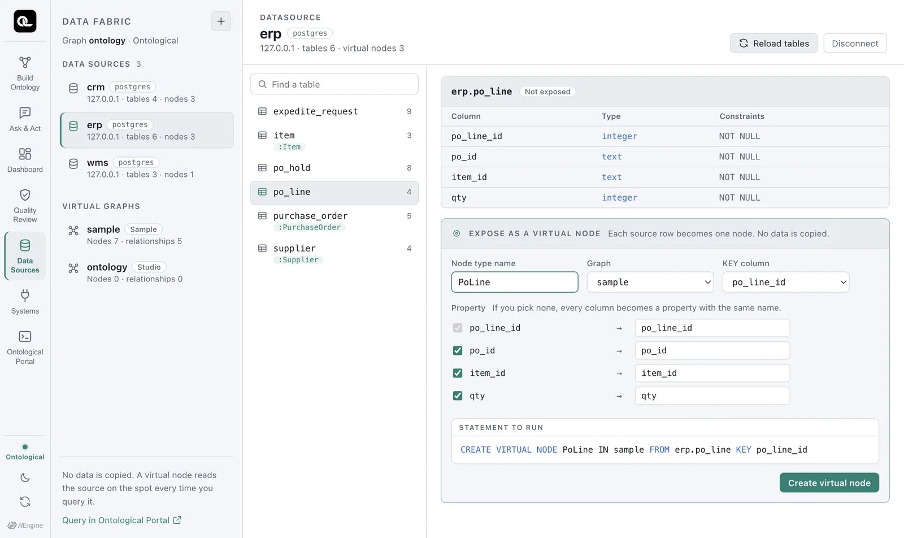
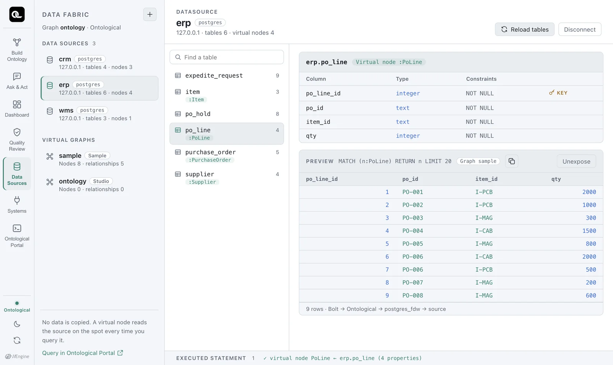
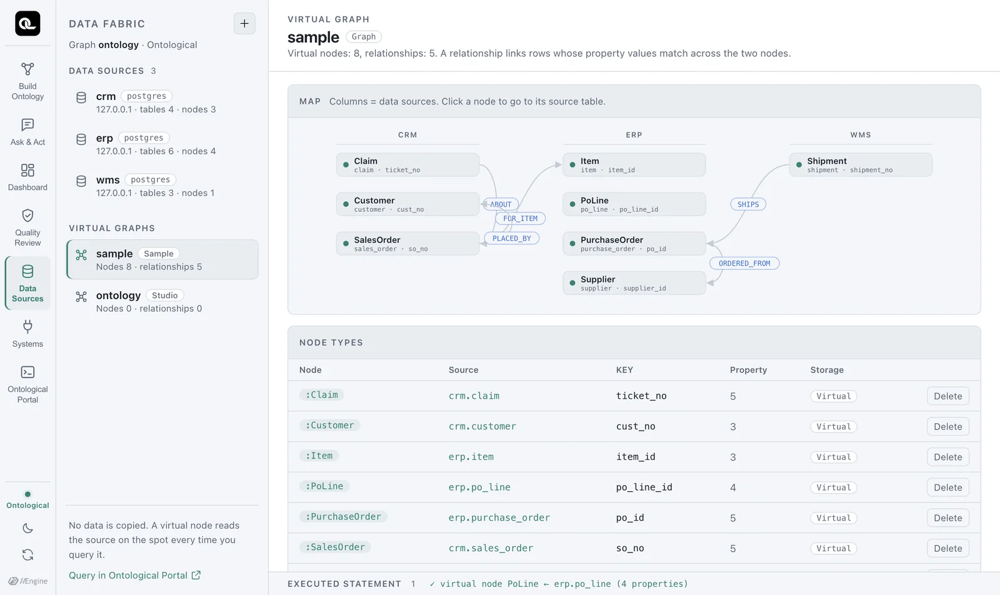
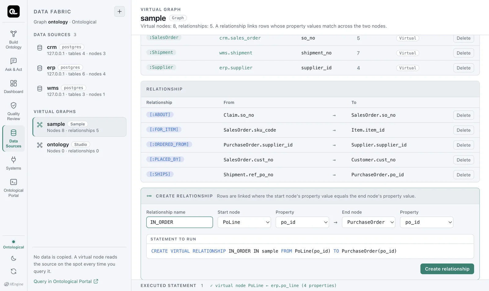
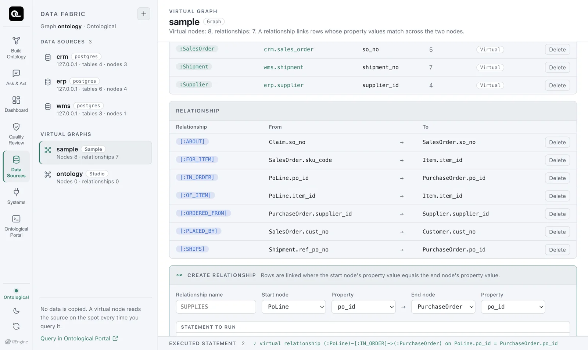

Turn
erp.po_line(purchase order lines), a table that is not exposed yet, into a virtual node and connect it to purchase orders and items with relationships. You will practice linking tables from different databases into a single graph.
What is a virtual node?#
A virtual node type defines one source table as a node type in the graph.
- One source row = one node, and columns = properties.
- The KEY column is the value that tells nodes apart (usually the primary key).
- No data is copied. Every time you run
MATCH (n:PoLine), the sourceerp.po_lineis read. - It is read-only. If you
CREATEorSETon a virtual node, the engine refuses. To change values you have to change them in the source system, and in Ontological Studio that is the job of actions (Part 6).
Try it — order lines as nodes#
- In the Data Sources tab, select
erpand clickpo_linein the table list. It still shows Not exposed. - In the Expose as a virtual node box at the bottom right, set the node type name to
PoLine, the graph tosampleand the KEY column topo_line_id. - If you leave the properties as they are, every column becomes a property with the same name. To rename one, edit the box on the right (for example,
qty→quantity). - Check Statement to run and click Create virtual node.

This is the statement that runs.
CREATE VIRTUAL NODE PoLine IN sample FROM erp.po_line KEY po_line_id
If you rename properties, a clause such as PROPERTIES (po_line_id, po_id, item_id, qty AS quantity) is added. As soon as the node type is created, the preview shows the 9 rows from the source.

Viewing the virtual graph#
Click sample under the virtual graphs at the bottom left to see the nodes and relationships, grouped by data source, as a graph. PoLine is not connected to any other node yet.

Try it — connecting with relationships#
An order line means a particular item in a particular purchase order. Define these two connections as relationships.
- In the relationship form at the bottom of the virtual graph view, enter the relationship name
IN_ORDER. - Choose start node
PoLine, propertypo_id→ end nodePurchaseOrder, propertypo_id. - Click Create relationship.

CREATE VIRTUAL RELATIONSHIP IN_ORDER IN sample FROM PoLine(po_id) TO PurchaseOrder(po_id)
Connect it to items the same way. This time, type the statement directly in the Portal (the Portal is covered in detail in Chapter 7; set the graph selector to sample).
CREATE VIRTUAL RELATIONSHIP OF_ITEM IN sample FROM PoLine(item_id) TO Item(item_id)

A virtual relationship copies no data. It is a join rule (PoLine.po_id = PurchaseOrder.po_id) saved under a name, and at query time the sources are joined by that rule.
Using it right away#
Now you can write a query that asks “Which items, and how many, did we order from each supplier?” It follows the relationships across four nodes: supplier → purchase order → order line → item.
MATCH (s:Supplier)<-[:ORDERED_FROM]-(po:PurchaseOrder)<-[:IN_ORDER]-(l:PoLine)-[:OF_ITEM]->(i:Item)
RETURN s.name, i.name, sum(l.qty) AS qty
ORDER BY s.name, i.name
| s.name | i.name | qty |
|---|---|---|
| Daesung Cable | Power cable | 1500 |
| Hanbit Precision | Magnet core | 900 |
| Hanoi Assembly | PCB board | 500 |
| Hanoi Assembly | Power cable | 2000 |
| Ningbo Magnetics | Magnet core | 1000 |
| Shenzhen Goldline PCB | PCB board | 3000 |
Next, a question that spans two systems: “Which items are the shipments more than 3 days late carrying, and what is their safety stock?” Shipments are in WMS; purchase orders, order lines and items are in ERP.
MATCH (i:Item)<-[:OF_ITEM]-(l:PoLine)-[:IN_ORDER]->(po:PurchaseOrder)<-[:SHIPS]-(sh:Shipment)
WHERE sh.delay_days > 3
RETURN DISTINCT i.name, i.safety_stock, sh.shipment_no, sh.delay_days
| i.name | i.safety_stock | sh.shipment_no | sh.delay_days |
|---|---|---|---|
| PCB board | 500 | SHP-02 | 7 |
| PCB board | 500 | SHP-03 | 9 |
Both shipments are carrying PCB boards. Now you know which item to flag to the inventory manager first.
Removing what you made#
DROP VIRTUAL RELATIONSHIP OF_ITEM IN sample
DROP VIRTUAL RELATIONSHIP IN_ORDER IN sample
DROP VIRTUAL NODE PoLine IN sample
You can't drop a node that still has relationships. The engine refuses with virtual relationships still join on 'PoLine' (IN_ORDER, OF_ITEM); drop them first, and the Data Sources tab restates this reason in plain language. Drop the relationships first. The source tables are not affected at all.
Later chapters use PoLine
Some examples in Chapters 7–9 use PoLine and its two relationships. Keep them; don't drop them.
If you try to write to a virtual node
Writing to a virtual node type, as in CREATE (x:Supplier {supplier_id:'S-XX'}), is refused like this.
text
'Supplier' is a virtual node type and read-only: its rows live in "erp"."supplier".
Write to the source system, or MATERIALIZE VIRTUAL NODE Supplier to take a copy
Changing source data is the job of the business system that owns that data. If you really need a copy, MATERIALIZE VIRTUAL NODE makes one, but after copying, changes in the source are no longer reflected automatically.
Check yourself
- Can you make
wms.stock_dailyinto aStockvirtual node? Think about what to use as the KEY. - Which two properties does the
FOR_ITEMrelationship betweenSalesOrderandItemconnect? Check withSHOW VIRTUAL RELATIONSHIPS. - Change the “ordered quantity per supplier and item” query above so it counts only open (
OPEN) purchase orders.
Show answers
- This table's primary key is three columns: (snapshot_date, sku_code, warehouse_cd). But
KEYtakes only one column (KEY (a, b, c)gives anexpected the key columnerror). WithKEY sku_codethe node type is created, but the same item appears in several of the table's 10 rows (one per date and warehouse), so the key can't single out one node. The right fix is to add an identifier column in the source (for example, in a view) that joins the three values into one. This shows why “identifiers” matter in data modeling. SalesOrder.sku_code→Item.item_id. CRM calls an itemsku_code, and ERP calls ititem_id.- Put
WHERE po.status = 'OPEN'beforeRETURN.
MATCH (s:Supplier)<-[:ORDERED_FROM]-(po:PurchaseOrder)<-[:IN_ORDER]-(l:PoLine)-[:OF_ITEM]->(i:Item)
WHERE po.status = 'OPEN'
RETURN s.name, i.name, sum(l.qty) AS qty ORDER BY s.name, i.name